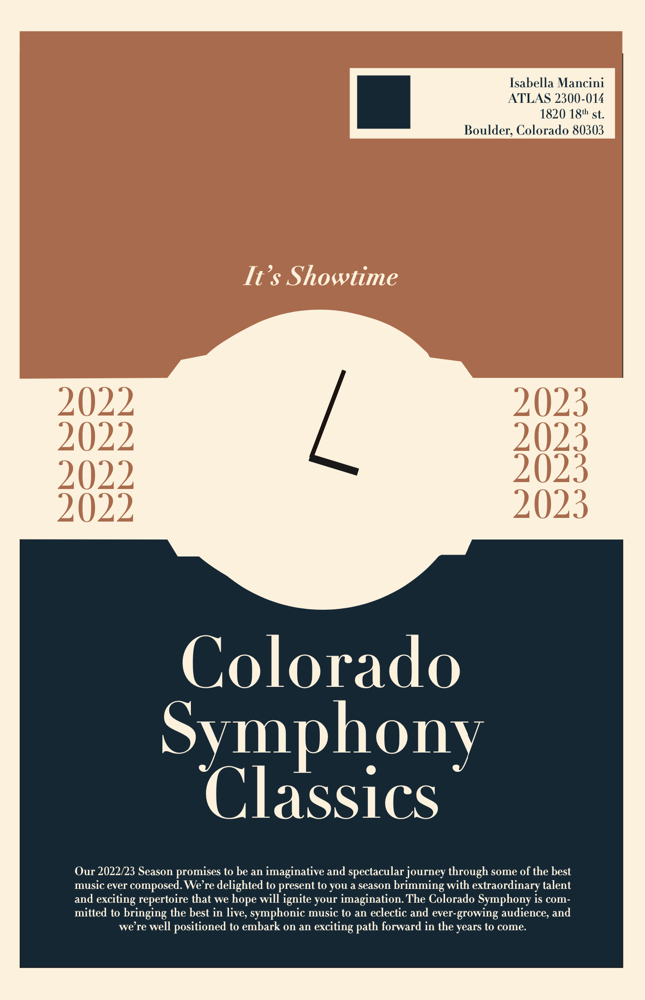

As the nature of this work is confidential I won't be able to show any project visuals for the time being.
However, I can provide a description of the work I've done.
For example, I created an employee relations tracker which will be used by the HR Bussiness partners for case management.
The app included a main dashboard that housed all the cases with buttons to edit each one and create a new case. When click the new case button there is
a toggle for the main case and the case notes. Within the main case there are people lookup feilds with multiple selections
as well as long text fields that grow as they type. The case notes would be used to make specific notes for interviews of each person involved in a case
which has a fillout able form on the right and a list of all case notes on the left. I also included a button on the screen to open a new window launching
a guide to interviews of witnesses, accusers, and the accused. When they are satisfied with the information they entered they can hit sumbit which takes them
back to the home screen where they can see the new case on the dashboard. All of these cases have edit buttons to populate the data on the form into the
case information screen that can be easily edited.
Design Classes
In my image class my favorite 3 projects from each section display my ability to use
photoshop, adobe premiere pro, and VR software. We worked with image in a 2D space, 2D with motion
and 3D with motion. Each of these pieces is from each section of the class respectively.
2D
2D With Time
3D With Time and Space
In my Text class I learned all about text from fonts, colors, and placement. This class
was heavily graphic design focused and I working on a couple larger projects. My favorites being
a poster mailer for the Colorado Symphony and a product branding for cereal.
Poster Mailer

In this class I learned how to 3D model in blender and turn digital models into physical models. I worked with
many different materials and processes, some of my favorite being 3D printing, laser cutting, and woodworking.
3D Model using blender
2D With Time
Writing Classes
This analysis paper was written using Norman's seven fundemental
design principals. To read the paper you can
click here
.
This consulting report was done in close contact with CU Boulder's head architect to come up with a
solution to help CU get closer to their goal of being carbon neutral by 2040. My team discussed with the
architect several solar solutions and then evaluted those options to recommend the best
course of action based on polls, comparitive research, and ROI calculations.
For my first introduction to design thinking I was tasked with observing the phenomenom of alone time and
how it's spent to come up with a useful app. To learn more about my process you can
click here
or to see the final Prototype and interact with it you can
click here.